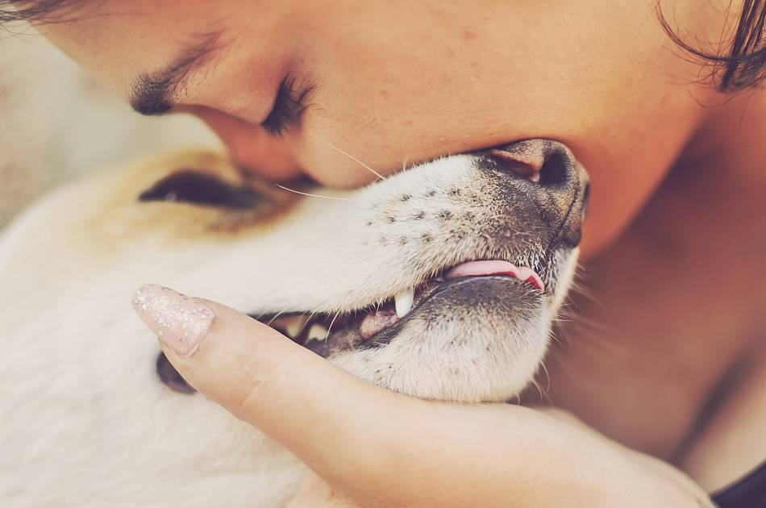
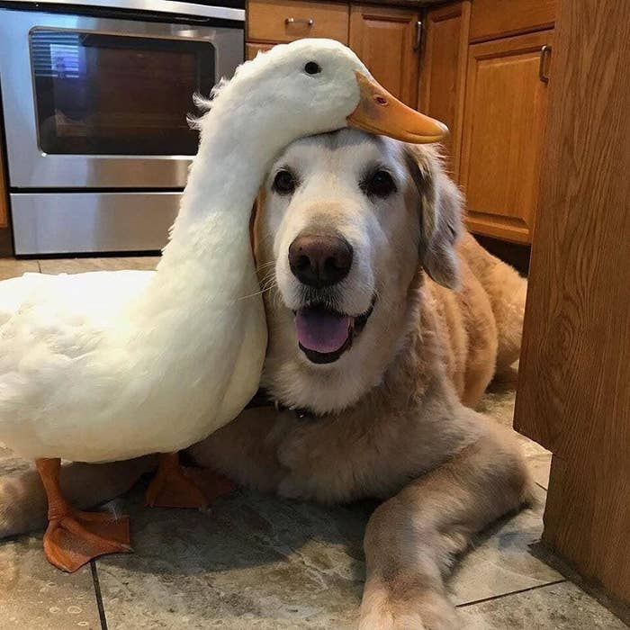
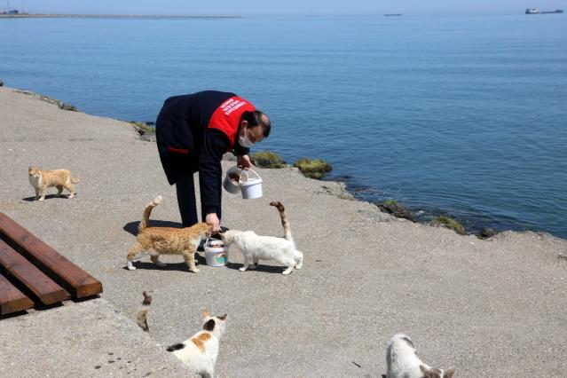

Canlarımızı Koruyalım

Sabahları bizi sevgiyle uyandıracak, her fırsatta bize minnetle bakacak, sıcacık bedeniyle yanımıza sığınıp bizi ısıtacak hayvan dostlarımıza iyi bakalım.
Onların sevgiye,sevilmeye ihtiyacı var.
Sahiplenmeniz mümkün değilse, yeni doğan ve bakıma muhtaç olan yavruların bakımını üstlenin.
Sağlık anlamında bir sıkıntınız varsa ve hayvanlara yaklaşamıyorsanız, barınaklara bağışta bulunun.
- Gelecek soğuk kış günleri için sokaklara kedi-köpek evleri yerleştirin, battaniye temin edin ve beslenmeleri için mama bırakın.
- Soğuk günlerde sokakta yaşayan hayvanlar sığınacak yer bulamazlar, üstelik yiyecek bulmak da neredeyse imkansızdır. Bu nedenle çevrenizin de desteğiyle kedi-köpek evleri hazırlayabilir, onları besleyebilirsiniz.
- Kayıp bir evcil hayvan bulursanız, sokağa bırakmak ya da başka birine sahiplendirmek yerine önce sahibine ulaştırmaya çalışın.
Özellikle sosyal medya bu konuda çok kıymetli.

Sosyal medyadaki sahiplendirme, kayıp bulma, ilaç temin etme, mama bağışlama gibi duyuruları paylaşın.
Hiçbir şey yapamıyorsanız, elinizden bir şey gelmiyorsa en azından sosyal medya hesaplarınızdan destek olabilirsiniz. Ulaştığınız bir insan dört ayaklı bir dostumuzun hayatını değiştirebilir.
Hiçbir can satılık değildir; petshop'lardan uzak durun ve tür çiftliklerine karşı çıkın.
Sırf görüntüsü güzellik standartlarına 'uygun' diye cins hayvanları satın almayın, sokaklar ve barınaklar birbirinden güzel ve bakıma muhtaç canlarla dolu...
- Sokaktaki dostlarımıza destek olan, ihtiyaçları konusunda indirim yapan ya da bizzat bakımı üstlenen markaları/firmaları tercih edin.
- Bu konuda sosyal medyada net bir kirlilik göze çarpsa da kişisel bir araştırmayla hangi markaların hayvan dostlarımıza destek olduğunu bulabilirsiniz. "Tek başıma neyi değiştirebilirim ki?" demeyin, tam tersini yapan firmalardan da uzak durun.
- Çocuğunuza ilk çağlarından itibaren hayvan sevgisi aşılayın; zarar vermemesi, sevmesi ve saygı göstermesi için elinizden geleni yapın.
Çevrenizdekilere rol model olun, sevginiz ve şefkatinizle bir canın nasıl kurtarılacağını gösterin.

Hayvanları sevmek, korumak maalesef tek başına yeterli olamıyor. Şiddet görmüş bir canlı için elinizden geleni yapmanız sizin iyi bir insan olduğunuzu gösterir fakat asıl başarı bir canlının şiddet görmesine engel olabilmektir. Bunun yolu da başta çocuklar olmak üzerine etrafındaki insanları
bilinçlendirmekten geçer.
Topluma duyarlı, vicdanlı ve bilinçli bir birey kazandırmayı istiyorsanız çocuğunuza mutlaka hayvan sevgisi aşılayın. Onlardan zarar gelmeyeceğini anlatın.